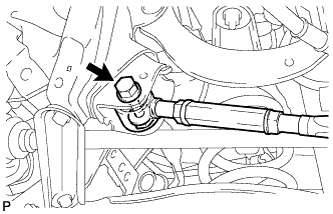

Rear Suspension Arm Assembly NO.1 LH Installation |
| 1. Temporarily Tighten Rear Suspension Arm Assembly NO.1 LH |
 |
Insert the stud of the rear suspension arm assembly No.1 LH into the rear axle carrier, and temporarily tighten it with the nut.
 |
Install the rear suspension arm assembly No.1 LH to the rear suspension member, and temporarily tighten it with the bolt and nut.
|
Fully tighten the nut of the rear suspension arm assembly No.1 LH.
| 2. Install Rear Tire |
| 3. Stabilize Suspension |
Lower the vehicle and bounce it up and down several times to stabilize the rear suspension.
| 4. Fully Tighten Rear Suspension Arm Assembly NO.1 LH |
Fully tighten the bolt of the rear suspension arm assembly No.1 LH (rear suspension member side).
| 5. Inspect and Adjust Rear Wheel Alignment |
)